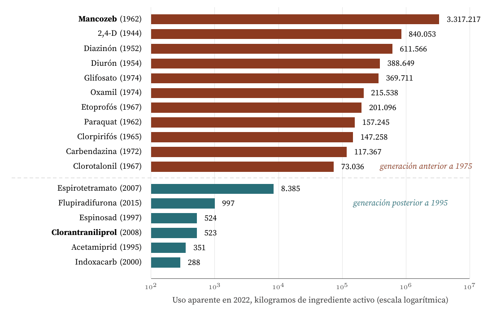

Por qué el registro de agroquímicos de Costa Rica mantiene viva una tecnología obsoleta
Carlos Luis Rojas Aragonés
Partí de un titular que se repite cada año en la prensa costarricense: según FAOSTAT, Costa Rica encabeza el mundo en uso de plaguicidas por hectárea (Semanario Universidad, 2023). El titular por sí solo no dice nada sobre tecnología, así que fui a la fuente primaria, el informe de uso aparente que publica el Servicio Fitosanitario del Estado con las importaciones y exportaciones de cada ingrediente activo (Servicio Fitosanitario del Estado, 2023).
Al abrir el cuadro por molécula apareció el caso. No es que Costa Rica use mucho plaguicida: es que usa plaguicida antiguo. De los 9,13 millones de kilogramos de ingrediente activo de uso aparente en 2022, el 70 % corresponde a once moléculas comercializadas entre 1944 y 1974. La química posterior a 1995, que es la que la industria considera el estado del arte, aparece en el mismo cuadro en cantidades de tres cifras. Es una tecnología teóricamente jubilada que sigue siendo, en la práctica, la única que se aplica.
Hablo de la primera generación de plaguicidas orgánicos de síntesis, la que se desarrolló entre el final de la Segunda Guerra Mundial y los primeros años setenta. Sus tres familias representativas en Costa Rica son:
Sus figuras de mérito (de Weck, 2022) son las propias de un diseño anterior a la biología molecular aplicada: actúan sobre procesos comunes a muchos organismos, no sobre una diana concreta de la plaga; por eso hay que aplicarlos en dosis de kilogramos por hectárea y por eso su toxicidad no discrimina entre la plaga, el aplicador y el organismo acuático. El informe del PNUD encuentra que 19 de los 21 plaguicidas más usados en el país, el 80 % del volumen total, califican como altamente peligrosos según los criterios FAO/OMS, y que de los 95 ingredientes activos asociados a efectos adversos para la salud que se usan en Costa Rica, 56 no están autorizados en la Unión Europea (Vargas Castro, 2021). Los dos fungicidas más representativos del bloque perdieron allí su aprobación por vía reglamentaria: el clorotalonil en 2019 y el mancozeb con vencimiento el 31 de enero de 2021 (Reglamento (UE) 2019/677, 2019; Reglamento (UE) 2020/2087, 2020).
La sustituta lleva treinta años disponible. Es la química de sitio único, diseñada a partir del conocimiento del receptor concreto sobre el que actúa: las diamidas antranílicas como el clorantraniliprol, que abre el receptor de rianodina del insecto; los inhibidores de la biosíntesis de lípidos como el espirotetramato; las espinosinas de origen fermentativo como el espinosad; o las oxadiazinas como el indoxacarb. A su lado corre el control biológico y la aplicación de precisión.
La mejora es de uno a dos órdenes de magnitud en la figura de mérito que importa, la dosis de ingrediente activo por hectárea necesaria para obtener control: entre 1.500 y 2.000 gramos por hectárea en el caso del mancozeb frente a entre 10 y 50 gramos en el del clorantraniliprol, según las dosis de etiqueta habituales. A eso se añade una toxicidad para mamíferos sustancialmente menor y una persistencia ambiental más corta.

Figura 1. Uso aparente de ingredientes activos en Costa Rica durante 2022, ordenado por volumen y separado por generación tecnológica. Elaboración propia con los datos del cuadro 2 del informe AE-REG-INF-001 del Servicio Fitosanitario del Estado (Servicio Fitosanitario del Estado, 2023). Los años entre paréntesis corresponden a la primera comercialización o al primer registro de la molécula y tienen una incertidumbre de uno o dos años en varios casos; ninguna conclusión del artículo depende de esa precisión.
La Figura 1 es el argumento entero en una imagen. El fungicida más usado del país es una molécula de 1962 y absorbe por sí solo el 36,3 % de todo el ingrediente activo del año. La diamida moderna equivalente, clorantraniliprol, registra 523 kilogramos. La razón entre ambas es de 6.344 a 1 en masa.
Esa razón exagera la diferencia real de superficie tratada, porque la dosis por hectárea de las dos moléculas no es comparable. Corregida por las dosis de etiqueta señaladas antes, la relación cae a un orden de 50 a 100 hectáreas tratadas con química de 1962 por cada hectárea tratada con química de 2008. Sigue siendo un país que, cuarenta y seis años después de que existiera la alternativa, no la ha adoptado.
Esta es la causa dominante y la que hace el caso interesante para la gestión tecnológica. En Costa Rica no existe una ley que prohíba importar moléculas nuevas. Existe algo más eficaz: un régimen de registro que no le pide nada al producto viejo y se lo pide todo al producto nuevo.
Conviene precisar que el Estado sí actúa, pero solo en una dirección. En 2004 se prohibieron por decreto 68 ingredientes activos y entre 2007 y 2008 se publicaron diez decretos más de prohibición o restricción (Rojas-Cabezas, 2016). El catálogo legal se encoge por un extremo sin que entre nada por el otro, que es la forma más rápida de convertir un régimen de protección en un régimen de congelación.
El resultado, según los oficios del propio Servicio Fitosanitario, es que 1.884 plaguicidas formulados siguen comercializándose con el registro vencido o sin fecha de vencimiento, sin una segunda revisión ni de su peligrosidad ni de su eficacia biológica, pese a llevar quince, veinte, treinta y más años en el mercado (Vargas Castro, 2021). Del otro lado, el Ministerio de Agricultura reconoció que el país pasó veintiún años sin poder registrar moléculas nuevas más eficientes (Delfino.cr, 2024).
Castro-Vargas y Werner (2023) llaman a este equilibrio regulation by impasse: no es una decisión de política, es un atasco que se reproduce solo, sostenido por la disputa entre ministerios, tribunales y autoridades regulatorias, y que ninguna de las partes tiene incentivo suficiente para resolver. Es exactamente el mecanismo de lock-in descrito por Arthur (1989), con la diferencia de que aquí el rendimiento creciente que fija la trayectoria no es de mercado, sino administrativo.
La reforma llegó en diciembre de 2022 con el decreto 43838, que permite homologar el registro ya otorgado en países de la OCDE (Decreto Ejecutivo 43838, 2022). El tamaño de su efecto mide el tamaño del atasco previo: a octubre de 2024 se habían registrado 39 productos, de los cuales 34 por homologación y solo 6 eran moléculas nuevas (Delfino.cr, 2024).
Las once moléculas del bloque superior de la figura están fuera de patente desde hace décadas, se fabrican en varias plantas asiáticas y compiten solo por precio. Las seis del bloque inferior son productos propietarios. El diferencial de coste por hectárea tratada es de varias veces, y se compara contra un ingreso por hectárea que no ha crecido en la misma proporción. Para el productor, el cálculo es inmediato y correcto.
La oferta comercial refuerza el sesgo: el mancozeb acumula 839 registros de producto formulado en el país y el paraquat 712 (Vargas Castro, 2021). Cambiar de molécula significa cambiar de proveedor, de distribuidor y de crédito de insumos, no solo de envase.
La química de sitio único exige saber qué plaga se tiene y en qué estadio, porque fuera de su espectro simplemente no funciona. El producto de amplio espectro perdona el error de diagnóstico. Y Costa Rica cuenta con unos 200 extensionistas para unos 238.000 productores, es decir un agente por cada 1.415 (Delfino.cr, 2023a). Cuando el servicio de extensión no existe, la tecnología que sobrevive es la que tolera la ignorancia sobre la plaga.
El coste de un fallo de control no es simétrico. Perder una cosecha de banano o de piña por probar una molécula nueva es un daño concreto e inmediato; el daño que causa la molécula vieja es difuso, diferido y lo paga en parte un tercero. El país registró 58 muertes por intoxicación con plaguicidas entre 2010 y 2020 y unos ₡5.000 millones anuales en costes sanitarios (Delfino.cr, 2023a), y el clorotalonil solo se prohibió en noviembre de 2023, después de que la contaminación de nacientes obligara a abastecer a 10.000 personas con cisternas (Delfino.cr, 2023b).
Hay una segunda respuesta, y es la que más me interesa como gestor de tecnología, porque no tiene nada que ver con la inercia.
Las moléculas modernas deben su ventaja a que actúan sobre una sola diana. Esa misma propiedad las hace frágiles: una única mutación en el patógeno anula el producto. Las estrobilurinas, lanzadas a finales de los noventa como la generación que jubilaba a los fungicidas de contacto, quedaron en buena medida sin eficacia frente a Septoria a comienzos de los años dos mil, y los inhibidores SDHI tienen un riesgo de resistencia calificado de medio a alto (Agriculture and Horticulture Development Board, 2023).
El mancozeb, en cambio, actúa sobre múltiples sitios a la vez. Está clasificado como M03 en la lista del FRAC, el grupo de riesgo de resistencia bajo, y tras seis décadas de uso intensivo los casos documentados de resistencia se limitan a unas pocas poblaciones de Plasmopara viticola en Europa (Fungicide Resistance Action Committee, 2024; Gullino et al., 2010). Por eso la recomendación técnica actual no es sustituirlo, sino mezclarlo: usar el multisitio de 1962 como socio de mezcla que protege la vida útil de la molécula de sitio único (Agriculture and Horticulture Development Board, 2023).
El atributo que hacía primitivo al mancozeb, su falta de selectividad, resultó ser la ventaja decisiva en un eje que nadie estaba midiendo en 1990: la durabilidad de la eficacia. El Cuadro 1 resume la comparación completa.
| Figura de mérito | Generación 1944-1974 | Generación 1995-2015 |
|---|---|---|
| Dosis para obtener control | 1.500 a 2.000 g ia/ha (mancozeb) | 10 a 50 g ia/ha (clorantraniliprol) |
| Modo de acción | Multisitio, espectro amplio | Sitio único, selectivo |
| Riesgo de resistencia | Bajo (FRAC M03) | Medio a alto |
| Toxicidad y persistencia | 19 de los 21 más usados son altamente peligrosos (FAO/OMS) | Perfil toxicológico sustancialmente menor |
| Estado en la Unión Europea | 56 de 95 ingredientes activos no autorizados | Autorizados |
| Coste por hectárea | Genérico fuera de patente, varios oferentes | Producto propietario |
| Exigencia de diagnóstico | Baja, tolera el error | Alta, exige identificar la plaga |
| Estatus registral en Costa Rica | 1.884 formulados sin vencimiento ni reválida | 21 años de bloqueo; 6 moléculas nuevas desde 2023 |
| Uso aparente en 2022 | 6,44 millones de kg ia (11 moléculas) | 11.068 kg ia (6 moléculas) |
El caso obliga a corregir la intuición habitual sobre por qué sobrevive una tecnología obsoleta. La respuesta cómoda es la inercia del usuario. Aquí la respuesta es otra: durante veintiún años el sistema regulatorio fue más restrictivo con la tecnología mejor que con la peor, porque la exigencia de evidencia se aplicó a la entrada y no a la permanencia. Cualquier régimen que evalúe lo nuevo con rigor y deje lo viejo sin caducidad produce el mismo resultado, sea en agroquímicos, en dispositivos médicos o en sistemas informáticos certificados.
Y una segunda lección, más incómoda: no todo lo que sobrevive lo hace por inercia. El mancozeb también sigue ahí porque el eje en el que la generación moderna es imbatible, la dosis por hectárea, deja fuera el eje en el que es frágil, la durabilidad de la eficacia. Antes de declarar obsoleta una tecnología conviene comprobar si el sucesor gana en todas las figuras de mérito o solo en la que hoy resulta más visible.
Agriculture and Horticulture Development Board. (2023). Practical measures to combat fungicide resistance in pathogens of barley. https://ahdb.org.uk/knowledge-library/practical-measures-to-combat-fungicide-resistance-in-pathogens-of-barley
Arthur, W. B. (1989). Competing technologies, increasing returns, and lock-in by historical events. The Economic Journal, 99(394), 116-131. https://doi.org/10.2307/2234208
Castro-Vargas, M. S., y Werner, M. (2023). Regulation by impasse: Pesticide registration, capital and the state in Costa Rica. Environment and Planning E: Nature and Space, 6(2), 901-921. https://doi.org/10.1177/25148486221116742
Decreto Ejecutivo 33495-MAG-S-MINAE-MEIC, Reglamento sobre registro, uso y control de plaguicidas sintéticos formulados, ingrediente activo grado técnico, coadyuvantes y sustancias afines de uso agrícola, Costa Rica (2006). Publicado en La Gaceta el 10 de enero de 2007.
Decreto Ejecutivo 43838-MAG-S-MINAE, Reglamento para el registro de plaguicidas sintéticos formulados e ingredientes activos grado técnico de uso agrícola, Costa Rica (2022). Firmado en diciembre de 2022, vigente desde febrero de 2023.
Delfino.cr. (2023a, agosto). Costa Rica con dependencia de plaguicidas: Gobierno dice que no puede prohibir productos a la ligera. https://delfino.cr/2023/08/costa-rica-con-dependencia-a-plaguicidas-gobierno-dice-que-no-puede-prohibir-productos-a-la-ligera
Delfino.cr. (2023b, noviembre). Plaguicida clorotalonil queda oficialmente prohibido en Costa Rica tras firma de Rodrigo Chaves. https://delfino.cr/2023/11/plaguicida-clorotalonil-queda-oficialmente-prohibido-en-costa-rica-tras-firma-de-rodrigo-chaves
Delfino.cr. (2024, octubre). MAG destaca registro de 6 nuevas moléculas para uso agrícola «más amigables con el ambiente». https://delfino.cr/2024/10/mag-destaca-registro-de-6-nuevas-moleculas-para-uso-agricola-mas-amigables-con-el-ambiente
de Weck, O. L. (2022). Technology roadmapping and development: A quantitative approach to the management of technology. Springer. https://doi.org/10.1007/978-3-030-88346-1
Fungicide Resistance Action Committee. (2024). FRAC code list: Fungicides sorted by mode of action. https://www.frac.info/
Gullino, M. L., Tinivella, F., Garibaldi, A., Kemmitt, G. M., Bacci, L., y Sheppard, B. (2010). Mancozeb: Past, present, and future. Plant Disease, 94(9), 1076-1087. https://doi.org/10.1094/PDIS-94-9-1076
Ley 8702, Ley de trámite de las solicitudes de registro de agroquímicos, Costa Rica (2009). https://www.fao.org/faolex/results/details/en/c/LEX-FAOC084975
Reglamento de Ejecución (UE) 2019/677 de la Comisión, relativo a la no renovación de la aprobación de la sustancia activa clorotalonil, Unión Europea (2019). https://eur-lex.europa.eu/eli/reg_impl/2019/677/oj/eng
Reglamento de Ejecución (UE) 2020/2087 de la Comisión, relativo a la no renovación de la aprobación de la sustancia activa mancoceb, Unión Europea (2020). https://eur-lex.europa.eu/legal-content/EN/TXT/PDF/?uri=CELEX:32020R2087
Rojas-Cabezas, E. (2016). Prohibición y restricción en el uso y comercialización de plaguicidas agrícolas en Costa Rica. Agronomía Costarricense, 40(1), 89-103. https://www.scielo.sa.cr/scielo.php?script=sci_arttext&pid=S0377-94242016000100089
Semanario Universidad. (2023, julio). Costa Rica es el país que utiliza más plaguicidas en todo el mundo, según estadísticas de la FAO. https://semanariouniversidad.com/pais/costa-rica-es-el-pais-que-utiliza-mas-plaguicidas-en-todo-el-mundo-segun-estadisticas-de-la-fao/
Servicio Fitosanitario del Estado. (2023, abril). Uso aparente de plaguicidas sintéticos en Costa Rica, período 2022 (Informe AE-REG-INF-001). Unidad de Registro de Agroquímicos, Ministerio de Agricultura y Ganadería. https://www.sfe.go.cr/Transparencia/Informe_uso_aparente_2022.pdf
Vargas Castro, E. (2021, diciembre). Análisis sobre el uso de plaguicidas en la agricultura en Costa Rica. Programa de las Naciones Unidas para el Desarrollo. https://impactoplaguicidas.cr/wp-content/uploads/2021/12/Analisis-del-uso-de-plaguicidas-en-la-agriculura-de-Costa-Rica-F.pdf